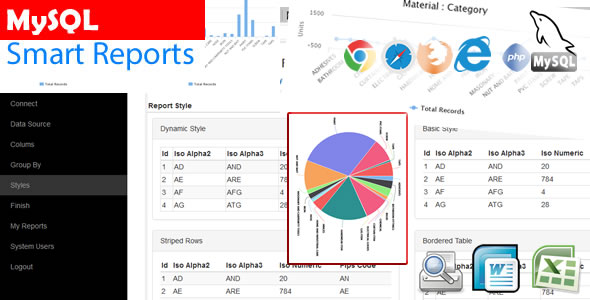

Created: 06/17/2016
By: Nelliwinne Mohottala
Email: premasirinelliwinne@gmail.com
Thank you for purchasing MySQL Smart Reports Script. If you have any questions that are beyond the scope of this help file, please feel free to email via my user page contact form here. Thanks so much!
MySQL Smart Reports is a complete solution for a report generating with existing MySQL Database. This will help you to Generate Reports, Select Table Style, Grouping Data and Print the Report. Also to Download the report on Microsoft Word or Excel.

You do not need any programming knowledge to generate reports. It's just made simple. What you need to know is connection to your MySQL Database. Once you connected to the database, you can select data table, columns and grouping option if you need, and then generate your report. This also have chart generating option if you have selected a grouping option with selected columns of your talbe.
This Editor script contains nearly 40 php files and nearly 7 folders which includes all the libraries. "Connections" folders includes database connection file (Connections/saha.php). Most of php files related to the software part located at the root folder
Connections/sys.php is system connection file which will use when a user connected to his/her own database. So you just need to worry about saha.php file only.
First Create a database in your server and import sql.sql file (at the root folder) to your database. When you need to remove all the test data please truncate all data in "recent" tables. "admin" table is user table. This database only have those two tables which are admin and recent.
Now change the database connection file at "Connections/saha.php" as follows
$hostname_saha = "yourhost";
$database_saha = "yourdbname";
$username_saha = "yourdbusername";
$password_saha = "yourdbpassword";
Finalizing the work.
Once again, thank you so much for purchasing this Item. As I said at the beginning, I'd be glad to help you if you have any questions relating to this Script. No guarantees, but I'll do my best to assist. If you have a more general question relating to the themes on CodeCanyon, you might consider visiting the forums and asking your question in the "Item Discussion" section.
Nelliwinne Mohottala